第 1 章 复数¶
Chapitre n°1 — Nombres complexes
阅读说明
每段先列法语原文；其下缩进、带深蓝竖条的小字号段落为中文翻译。加粗为关键词，括号内为中文释义。
Objectifs 学习目标¶
-
Manipuler des nombres complexes sous forme algébrique ou exponentielle.
熟练操作代数形式或指数形式的复数。
-
Simplifier des expressions contenant des nombres complexes.
化简含有复数的表达式。
-
Résoudre des équations d'inconnues complexes.
求解未知量为复数的方程。
Notations 记号¶
On rappelle que \(\mathbb{R}\) désigne l'ensemble des nombres réels, \(\mathbb{Z}\) désigne l'ensemble des entiers relatifs et \(\mathbb{N}\) désigne l'ensemble des entiers naturels.
回忆：\(\mathbb{R}\) 表示实数集，\(\mathbb{Z}\) 表示整数集， \(\mathbb{N}\) 表示自然数集。
Forme algébrique 代数形式¶
Définition 1.1 : nombre complexe sous forme algébrique
定义 1.1：代数形式的复数（nombre complexe sous forme algébrique）
Un nombre complexe est un nombre de la forme \(z = x + iy\) où :
一个复数是形如 \(z = x + iy\) 的数，其中：
-
\(x = \mathrm{Re}(z)\) est un nombre réel appelé la partie réelle du nombre complexe \(z\),
\(x = \mathrm{Re}(z)\) 是一个实数，称为复数 \(z\) 的实部（partie réelle）；
-
\(y = \mathrm{Im}(z)\) est un nombre réel appelé la partie imaginaire du nombre complexe \(z\),
\(y = \mathrm{Im}(z)\) 是一个实数，称为复数 \(z\) 的虚部（partie imaginaire）；
-
et \(i\) est un symbole mathématique.
\(i\) 是一个数学符号。
L'écriture \(x + iy\) est appelée la forme algébrique de \(z\). On note \(\mathbb{C}\) l'ensemble des nombres complexes :
写法 \(x + iy\) 称为 \(z\) 的代数形式（forme algébrique）。记 \(\mathbb{C}\) 为复数集：
Exemple 1.2
例 1.2
-
\(3 - 2i\) est un nombre complexe de partie réelle égale à \(\mathrm{Re}(3-2i) = 3\) et de partie imaginaire égale à \(\mathrm{Im}(3-2i) = -2\).
\(3 - 2i\) 是一个复数，其实部等于 \(\mathrm{Re}(3-2i) = 3\)，虚部等于 \(\mathrm{Im}(3-2i) = -2\)。
-
Tout nombre réel est un nombre complexe dont la partie imaginaire est nulle :
任何实数都是虚部为零的复数：
\[ \forall x \in \mathbb{R},\ x = x + 0i \in \mathbb{C}. \]Autrement dit, \(\mathbb{R} \subset \mathbb{C}\). En particulier, \(0\) et \(1\) sont des nombres complexes.
换言之，\(\mathbb{R} \subset \mathbb{C}\)。特别地，\(0\) 和 \(1\) 都是复数。
-
\(i = 0 + 1i\) est un nombre complexe.
\(i = 0 + 1i\) 是一个复数。
Définition 1.3 : opérations avec les nombres complexes
定义 1.3：复数的运算（opérations）
L'ensemble \(\mathbb{C}\) est muni d'une addition et d'une multiplication définies par :
集合 \(\mathbb{C}\) 上定义了加法（addition）与乘法（multiplication）：
Exemple 1.4
例 1.4
-
\((2-3i) + (4+i) = 6 - 2i\) et \((2-3i)(4+i) = [8-(-3)] + [2+(-12)] = 11 - 10i\).
\((2-3i) + (4+i) = 6 - 2i\)，且 \((2-3i)(4+i) = [8-(-3)] + [2+(-12)] = 11 - 10i\)。
-
Pour \(x_1 = x_1 + i0 \in \mathbb{R}\) et \(x_2 = x_2 + i0 \in \mathbb{R}\), on retrouve l'addition et la multiplication des nombres réels :
对于 \(x_1 = x_1 + i0 \in \mathbb{R}\) 与 \(x_2 = x_2 + i0 \in \mathbb{R}\)，重新得到实数的加法和乘法：
\[ \begin{cases} (x_1 + i0) + (x_2 + i0) = [x_1 + x_2] + i[0+0] = x_1 + x_2 \\[3pt] (x_1 + i0)(x_2 + i0) = [x_1x_2 - 0] + i[0+0] = x_1x_2 \end{cases}. \] -
On remarque que \(i^2 = (0+1i)(0+1i) = [0-1] + i[0+0] = -1\).
注意到 \(i^2 = (0+1i)(0+1i) = [0-1] + i[0+0] = -1\)。
Propriété 1.5
性质 1.5
Les opérations avec les nombres complexes ont les mêmes propriétés algébriques que les opérations avec les nombres réels, en particulier :
复数的运算与实数的运算具有相同的代数性质，特别地：
-
associativité : \(\forall (z_1,z_2,z_3) \in \mathbb{C}^3\), \(\begin{cases}(z_1+z_2)+z_3 = z_1+(z_2+z_3) \\[3pt] (z_1z_2)z_3 = z_1(z_2z_3)\end{cases}\) ,
结合律（associativité）：\(\forall (z_1,z_2,z_3) \in \mathbb{C}^3\)， \(\begin{cases}(z_1+z_2)+z_3 = z_1+(z_2+z_3) \\[3pt] (z_1z_2)z_3 = z_1(z_2z_3)\end{cases}\) ,
-
commutativité : \(\forall (z_1,z_2) \in \mathbb{C}^2\), \(\begin{cases}z_1+z_2 = z_2+z_1 \\[3pt] z_1z_2 = z_2z_1\end{cases}\) ,
交换律（commutativité）：\(\forall (z_1,z_2) \in \mathbb{C}^2\)， \(\begin{cases}z_1+z_2 = z_2+z_1 \\[3pt] z_1z_2 = z_2z_1\end{cases}\) ,
-
distributivité : \(\forall (z_1,z_2,z_3) \in \mathbb{C}^3\), \(z_1(z_2+z_3) = z_1z_2 + z_1z_3\).
分配律（distributivité）：\(\forall (z_1,z_2,z_3) \in \mathbb{C}^3\)， \(z_1(z_2+z_3) = z_1z_2 + z_1z_3\)。
Important
重要
Ainsi, les calculs avec les nombres complexes se mènent comme ceux avec les nombres réels, en simplifiant les expressions à l'aide de \(i^2 = -1\).
因此，复数的计算与实数的计算方式相同，只需利用 \(i^2 = -1\) 化简表达式。
Attention
注意
Par contre, il n'existe pas de relation d'ordre sur \(\mathbb{C}\) compatible avec les opérations, comme la relation d'ordre sur \(\mathbb{R}\). On ne peut donc pas comparer deux nombres complexes, ni définir des notions de bornes pour des parties de \(\mathbb{C}\) (telles que majorant, minorant, maximum, minimum, etc.).
然而，\(\mathbb{C}\) 上不存在与运算相容（compatible）的序关系（relation d'ordre）， 不像 \(\mathbb{R}\) 上的序关系。因此既不能比较两个复数的大小，也不能对 \(\mathbb{C}\) 的子集定义界的 概念（如上界 majorant、下界 minorant、最大值 maximum、最小值 minimum 等）。
Vocabulaire clé 重点词汇
第一节核心术语
- nombre complexe：复数
- partie réelle / partie imaginaire：实部 / 虚部
- forme algébrique：代数形式
- addition / multiplication：加法 / 乘法
- associativité / commutativité / distributivité：结合律 / 交换律 / 分配律
- être muni de：带有、赋予（「\(\mathbb{C}\) est muni d'une addition」即 \(\mathbb{C}\) 上定义了加法）
- relation d'ordre：序关系
- compatible avec：与……相容
- majorant / minorant：上界 / 下界
- maximum / minimum：最大值 / 最小值
- autrement dit：换言之
- en particulier：特别地
- on remarque que：注意到
- se mènent comme：与……同样进行（计算）
Le plan complexe 复平面¶
On rappelle que l'ensemble \(\mathbb{R}^2\), appelé le plan euclidien, peut être représenté géométriquement par un plan muni d'un repère orthonormé \((O,\vec{e_1},\vec{e_2})\) : chaque couple \((x,y) \in \mathbb{R}^2\) est associé à un point \(M\) d'abscisse \(x\) et d'ordonnée \(y\). On dit aussi que \((x,y)\) sont les coordonnées du point \(M\) ou du vecteur \(\overrightarrow{OM} = x\vec{e_1} + y\vec{e_2}\).
回忆：集合 \(\mathbb{R}^2\)（称为欧几里得平面）可以用一个带有正交标架 （repère orthonormé）\((O,\vec{e_1},\vec{e_2})\) 的平面几何地表示：每个数对 \((x,y) \in \mathbb{R}^2\) 对应一个横坐标（abscisse）为 \(x\)、纵坐标（ordonnée）为 \(y\) 的点 \(M\)。我们也说 \((x,y)\) 是点 \(M\) 或向量 \(\overrightarrow{OM} = x\vec{e_1} + y\vec{e_2}\) 的坐标（coordonnées）。
Définition 2.1 : représentation géométrique de \(\mathbb{C}\)
定义 2.1：\(\mathbb{C}\) 的几何表示
À chaque nombre complexe \(z = x + iy \in \mathbb{C}\), on associe le point \(M\) de coordonnées \((x,y) \in \mathbb{R}^2\) dans le plan euclidien. On dit aussi que \(z\) est l'affixe du point \(M\) ou du vecteur \(\overrightarrow{OM} = x\vec{e_1} + y\vec{e_2}\). Cette représentation de \(\mathbb{C}\) est appelée le plan complexe.
对每个复数 \(z = x + iy \in \mathbb{C}\)，对应欧几里得平面中坐标为 \((x,y) \in \mathbb{R}^2\) 的点 \(M\)。 我们也说 \(z\) 是点 \(M\) 或向量 \(\overrightarrow{OM} = x\vec{e_1} + y\vec{e_2}\) 的坐标（affixe）。 \(\mathbb{C}\) 的这种表示称为复平面（plan complexe）。
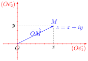 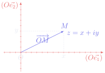
On remarque que l'axe \((O\vec{e_1})\), appelé axe des réels, correspond à l'ensemble \(\mathbb{R}\). L'axe \((O\vec{e_2})\) correspond à l'ensemble \(i\mathbb{R} = \{0 + iy \mid y \in \mathbb{R}\}\) et est appelé l'axe des imaginaires purs.
注意到轴 \((O\vec{e_1})\) 称为实轴（axe des réels），对应集合 \(\mathbb{R}\)。轴 \((O\vec{e_2})\) 对应集合 \(i\mathbb{R} = \{0 + iy \mid y \in \mathbb{R}\}\)，称为虚轴（axe des imaginaires purs）。
On peut interpréter géométriquement l'addition de deux nombres complexes : si \(z_1 \in \mathbb{C}\) et \(z_2 \in \mathbb{C}\) sont les affixes respectives des points \(M_1\) et \(M_2\) dans le plan complexe, alors \(z_1 + z_2\) est l'affixe du point \(P\) défini par \(\overrightarrow{OP} = \overrightarrow{OM_1} + \overrightarrow{OM_2}\). On reconnaît la grande diagonale du parallélogramme porté par les vecteurs d'affixe \(z_1\) et \(z_2\). De même, \(z_2 - z_1\) est l'affixe du vecteur \(\overrightarrow{M_1M_2}\) qui correspond à la petite diagonale du parallélogramme.
可以几何地解释两个复数的加法：若 \(z_1 \in \mathbb{C}\) 与 \(z_2 \in \mathbb{C}\) 分别是复平面中点 \(M_1\) 与 \(M_2\) 的坐标（affixes respectives 即「各自的坐标」），则 \(z_1 + z_2\) 是由 \(\overrightarrow{OP} = \overrightarrow{OM_1} + \overrightarrow{OM_2}\) 定义的点 \(P\) 的坐标。 可以认出（on reconnaît）这是以坐标为 \(z_1\)、\(z_2\) 的向量为边的平行四边形的长对角线。同样， \(z_2 - z_1\) 是向量 \(\overrightarrow{M_1M_2}\) 的坐标，对应平行四边形的短对角线。
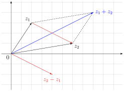 
Définition 2.2 : conjugué
定义 2.2：共轭（conjugué）
Le conjugué d'un nombre complexe \(z = x + iy \in \mathbb{C}\) est le nombre complexe \(\bar{z} = x - iy\). Dans le plan complexe, \(\bar{z}\) est l'affixe du symétrique par rapport à l'axe des réels du point d'affixe \(z\).
复数 \(z = x + iy \in \mathbb{C}\) 的共轭是复数 \(\bar{z} = x - iy\)。在复平面中，\(\bar{z}\) 是 坐标为 \(z\) 的点关于实轴的对称点的坐标。
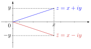 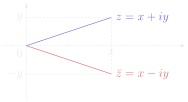
Exemple 2.3
例 2.3
Pour \(j = -\frac{1}{2} + i\frac{\sqrt{3}}{2}\), on a :
对于 \(j = -\frac{1}{2} + i\frac{\sqrt{3}}{2}\)，有：
Propriété 2.4
性质 2.4
-
\(\forall z \in \mathbb{C},\ \bar{\bar{z}} = z\),
\(\forall z \in \mathbb{C},\ \bar{\bar{z}} = z\)，
-
\(\forall (z,w) \in \mathbb{C}^2\), \(\begin{cases}\overline{z + w} = \bar{z} + \bar{w} \\[3pt] \overline{zw} = \bar{z}\,\bar{w}\end{cases}\) .
\(\forall (z,w) \in \mathbb{C}^2\)， \(\begin{cases}\overline{z + w} = \bar{z} + \bar{w} \\[3pt] \overline{zw} = \bar{z}\,\bar{w}\end{cases}\) 。
Propriété 2.5
性质 2.5
Pour tout nombre complexe \(z \in \mathbb{C}\), on a :
对任何复数 \(z \in \mathbb{C}\)，有：
en particulier :
特别地：
Vocabulaire clé 重点词汇
第二节核心术语
- plan euclidien：欧几里得平面
- repère orthonormé：正交标架
- abscisse / ordonnée：横坐标 / 纵坐标
- coordonnées：坐标
- affixe：坐标（复平面中点的复数表示）
- plan complexe：复平面
- axe des réels：实轴
- axe des imaginaires purs：虚轴
- conjugué \(\bar{z}\)：共轭
- symétrique par rapport à l'axe des réels：关于实轴的对称点
- parallélogramme：平行四边形
- grande / petite diagonale：长 / 短对角线
- on reconnaît：可以认出
- affixes respectives：各自的坐标
- on associe à：把……对应到
Module 模¶
Définition 3.1 : module
定义 3.1：模（module）
Le module d'un nombre complexe \(z = x + iy \in \mathbb{C}\) est le nombre réel positif :
复数 \(z = x + iy \in \mathbb{C}\) 的模是非负实数：
Dans le plan complexe, \(|z|\) est la distance entre l'origine \(O\) et le point d'affixe \(z\), c'est-à-dire la norme euclidienne du vecteur d'affixe \(z\).
在复平面中，\(|z|\) 是原点 \(O\) 与坐标为 \(z\) 的点之间的距离，即坐标为 \(z\) 的向量的欧几里得范数。
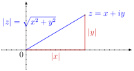 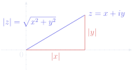
Pour \(x = x + i0 \in \mathbb{R}\), on retrouve la valeur absolue d'un nombre réel : \(|x + i0| = \sqrt{x^2} = |x|\).
对于 \(x = x + i0 \in \mathbb{R}\)，重新得到实数的绝对值：\(|x + i0| = \sqrt{x^2} = |x|\)。
Exemple 3.2
例 3.2
-
Si \(z_1 \in \mathbb{C}\) et \(z_2 \in \mathbb{C}\) sont les affixes respectives des points \(M_1\) et \(M_2\) dans le plan complexe, alors \(|z_2 - z_1| = \left\|\overrightarrow{M_1M_2}\right\| = M_1M_2\) est la distance entre \(M_1\) et \(M_2\).
若 \(z_1 \in \mathbb{C}\) 与 \(z_2 \in \mathbb{C}\) 分别是复平面中点 \(M_1\) 与 \(M_2\) 的坐标，则 \(|z_2 - z_1| = \left\|\overrightarrow{M_1M_2}\right\| = M_1M_2\) 是 \(M_1\) 与 \(M_2\) 之间的距离。
-
Soient \(w \in \mathbb{C}\) et \(r > 0\). L'ensemble des affixes des points du cercle de centre d'affixe \(w\) et de rayon \(r\) est \(\{z \in \mathbb{C} \mid |z - w| = r\}\). En particulier, l'ensemble \(\mathbb{U} = \{z \in \mathbb{C} \mid |z| = 1\}\) des nombres complexes de module 1, appelé cercle unité, correspond au cercle trigonométrique \(\{(\cos(\theta),\sin(\theta)) \mid \theta \in \mathbb{R}\}\) dans le plan euclidien.
设 \(w \in \mathbb{C}\)，\(r > 0\)。以坐标为 \(w\) 的点为圆心、\(r\) 为半径的圆上各点的坐标之集为 \(\{z \in \mathbb{C} \mid |z - w| = r\}\)。特别地，模为 1 的复数之集 \(\mathbb{U} = \{z \in \mathbb{C} \mid |z| = 1\}\) 称为单位圆（cercle unité）， 对应欧几里得平面中的三角圆（cercle trigonométrique） \(\{(\cos(\theta),\sin(\theta)) \mid \theta \in \mathbb{R}\}\)。
-
\(|j| = \left|-\frac{1}{2} + i\frac{\sqrt{3}}{2}\right| = \sqrt{\left(-\frac{1}{2}\right)^2 + \left(\frac{\sqrt{3}}{2}\right)^2} = 1\), donc \(j \in \mathbb{U}\).
\(|j| = \left|-\frac{1}{2} + i\frac{\sqrt{3}}{2}\right| = \sqrt{\left(-\frac{1}{2}\right)^2 + \left(\frac{\sqrt{3}}{2}\right)^2} = 1\)，因此 \(j \in \mathbb{U}\)。
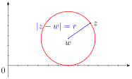 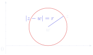
Propriété 3.3 : inverse d'un nombre complexe
性质 3.3：复数的逆元
En particulier, tout nombre complexe \(z \neq 0\) admet un inverse qui est égal à \(\frac{1}{z} = \frac{\bar{z}}{|z|^2}\).
特别地，任何非零复数 \(z \neq 0\) 都有逆元，且 \(\frac{1}{z} = \frac{\bar{z}}{|z|^2}\)。
Par analogie avec les autres ensembles de nombres, on note \(\mathbb{C}^* = \{z \in \mathbb{C} \mid z \neq 0\}\).
仿照其他数集的记法，记 \(\mathbb{C}^* = \{z \in \mathbb{C} \mid z \neq 0\}\)。
Exemple 3.4
例 3.4
-
\(\dfrac{2+i\sqrt{3}}{\sqrt{3}-2i} = \dfrac{(2+i\sqrt{3})\left(\sqrt{3}+2i\right)}{\left(\sqrt{3}-2i\right)\left(\sqrt{3}+2i\right)} = \dfrac{\left[2\sqrt{3}-2\sqrt{3}\right] + i[4+3]}{3+4} = i\).
\(\dfrac{2+i\sqrt{3}}{\sqrt{3}-2i} = \dfrac{(2+i\sqrt{3})\left(\sqrt{3}+2i\right)}{\left(\sqrt{3}-2i\right)\left(\sqrt{3}+2i\right)} = \dfrac{\left[2\sqrt{3}-2\sqrt{3}\right] + i[4+3]}{3+4} = i\)。
-
\(\frac{1}{j} = \frac{\bar{j}}{|j|^2} = \bar{j} = j^2\), donc \(j^3 = 1\).
\(\frac{1}{j} = \frac{\bar{j}}{|j|^2} = \bar{j} = j^2\)，因此 \(j^3 = 1\)。
Propriété 3.5
性质 3.5
-
\(\forall z \in \mathbb{C},\ |z| \geqslant 0\),
\(\forall z \in \mathbb{C},\ |z| \geqslant 0\)，
-
\(\forall z \in \mathbb{C},\ |z| = 0 \iff z = 0\),
\(\forall z \in \mathbb{C},\ |z| = 0 \iff z = 0\)，
-
\(\forall z \in \mathbb{C},\ |\bar{z}| = |z|\),
\(\forall z \in \mathbb{C},\ |\bar{z}| = |z|\)，
-
\(\forall (z,w) \in \mathbb{C}^2,\ |zw| = |z||w|\).
\(\forall (z,w) \in \mathbb{C}^2,\ |zw| = |z||w|\)。
Théorème 3.6 : inégalité triangulaire dans \(\mathbb{C}\)
定理 3.6：\(\mathbb{C}\) 中的三角不等式
Le cas d'égalité se produit si et seulement si \(z\bar{w} \in \mathbb{R}_+\), c'est-à-dire si et seulement si les points d'affixes \(z\) et \(w\) appartiennent à la même demi-droite issue de l'origine \(O\) dans le plan complexe.
等号成立（cas d'égalité）当且仅当 \(z\bar{w} \in \mathbb{R}_+\)，即当且仅当坐标为 \(z\) 与 \(w\) 的点 在复平面中属于同一条从原点 \(O\) 出发的射线（demi-droite issue de l'origine）。
Démonstration. 证明。
Soit \((z,w) \in \mathbb{C}^2\). On a :
设 \((z,w) \in \mathbb{C}^2\)。有：
Lemme 3.7
引理 3.7
Pour tout nombre complexe \(z \in \mathbb{C}\), on a :
对任何复数 \(z \in \mathbb{C}\)，有：
Démonstration. 证明。
Soit \(z = x + iy \in \mathbb{C}\). On a :
设 \(z = x + iy \in \mathbb{C}\)。有：
On raisonne de même pour la partie imaginaire.
（car la fonction \(t \mapsto \sqrt{t}\) est croissante 意为：因为函数 \(t \mapsto \sqrt{t}\) 单调递增。） 对虚部同样推理。
∎
D'après le lemme, on a \(\mathrm{Re}(z\bar{w}) \leqslant |\mathrm{Re}(z\bar{w})| \leqslant |z\bar{w}|\), donc \(|z + w|^2 \leqslant (|z| + |w|)^2\). On en déduit l'inégalité triangulaire par croissance de la fonction \(t \mapsto \sqrt{t}\). De plus, on remarque que le cas d'égalité se produit si et seulement si \(\mathrm{Re}(z\bar{w}) = |z\bar{w}|\), donc si et seulement si \(z\bar{w} \in \mathbb{R}_+\). Si \(w = 0\) l'égalité est évidente, sinon on remarque que :
根据引理，有 \(\mathrm{Re}(z\bar{w}) \leqslant |\mathrm{Re}(z\bar{w})| \leqslant |z\bar{w}|\)，因此 \(|z + w|^2 \leqslant (|z| + |w|)^2\)。由函数 \(t \mapsto \sqrt{t}\) 的单调递增性即可推出三角不等式。 此外注意到，等号成立当且仅当 \(\mathrm{Re}(z\bar{w}) = |z\bar{w}|\)，即当且仅当 \(z\bar{w} \in \mathbb{R}_+\)。若 \(w = 0\)，等号显然成立；否则注意到：
Autrement dit, le cas d'égalité se produit si et seulement si les vecteurs d'affixe \(z\) et \(w\) sont proportionnels, avec une constante de proportionnalité positive.
换言之，等号成立当且仅当坐标为 \(z\) 与 \(w\) 的向量成比例（proportionnels），且比例系数为正。 ∎
Corollaire 3.8
推论 3.8
Attention
注意
Ne pas confondre valeurs absolues et modules.
不要混淆绝对值与模。
Vocabulaire clé 重点词汇
第三节核心术语
- module \(|z|\)：模
- valeur absolue：绝对值
- cercle unité：单位圆
- cercle trigonométrique：三角圆
- rayon：半径
- distance：距离
- norme euclidienne：欧几里得范数
- inverse：逆元
- inégalité triangulaire：三角不等式
- le cas d'égalité：等号成立的情形
- demi-droite issue de l'origine：从原点出发的射线
- proportionnels：成比例的
- constante de proportionnalité positive：正的（比例）系数
- ne pas confondre … et …：不要混淆……与……
- on en déduit que：由此推出
Argument 辐角¶
Définition 4.1 : argument d'un nombre complexe non nul
定义 4.1：非零复数的辐角（argument）
Soit \(z \in \mathbb{C}^*\). On appelle argument de \(z\), noté \(\arg(z)\), toute mesure en radians de l'angle orienté \((\vec{e_1},\overrightarrow{OM})\) où \(M\) est le point d'affixe \(z\) dans le plan complexe.
设 \(z \in \mathbb{C}^*\)。称 \(z\) 的辐角，记作 \(\arg(z)\)，为有向角 \((\vec{e_1},\overrightarrow{OM})\) 的任意弧度度量，其中 \(M\) 是复平面中坐标为 \(z\) 的点。
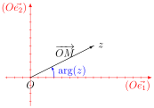 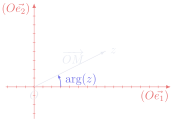
Important
重要
Par définition, tout nombre complexe non nul admet une infinité d'arguments. Plus précisément, un argument est défini modulo \(2\pi\). On parle toujours d'un argument et jamais de l'argument. Par contre, l'unique valeur d'argument comprise dans \(]-\pi,\pi]\) est appelée l'argument principal.
按定义，任何非零复数都有无穷多个辐角。更确切地说，辐角是模 \(2\pi\) 定义的。我们总说「一个辐角」， 而绝不说「那个辐角」。而落在 \(]-\pi,\pi]\) 内的唯一辐角值称为主辐角（argument principal）。
Attention
注意
On ne peut pas attribuer d'argument à \(0\) car l'angle \((\vec{e_1},\vec{0})\) n'est pas défini.
不能给 \(0\) 指定辐角，因为角 \((\vec{e_1},\vec{0})\) 没有定义。
Théorème 4.2 : forme trigonométrique d'un nombre complexe non nul
定理 4.2：非零复数的三角形式
Tout \(z \in \mathbb{C}^*\) s'écrit de manière unique sous la forme :
任何 \(z \in \mathbb{C}^*\) 都能唯一地写成如下形式：
où \(\rho > 0\) et \(\theta \in \mathbb{R}\) est défini modulo \(2\pi\). De plus, on a \(\rho = |z|\) et \(\theta = \arg(z)\). Cette écriture est appelée la forme trigonométrique de \(z\).
其中 \(\rho > 0\)，\(\theta \in \mathbb{R}\) 模 \(2\pi\) 定义。此外有 \(\rho = |z|\)、\(\theta = \arg(z)\)。 这种写法称为 \(z\) 的三角形式（forme trigonométrique）。
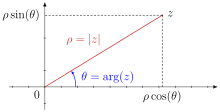 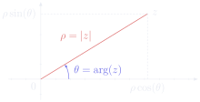
Exemple 4.3
例 4.3
Pour \(z = 1-i\), on a \(|z| = \sqrt{1^2 + (-1)^2} = \sqrt{2}\). En notant \(\theta = \arg(z)\), on obtient :
对于 \(z = 1-i\)，有 \(|z| = \sqrt{1^2 + (-1)^2} = \sqrt{2}\)。记 \(\theta = \arg(z)\)，得到：
On en déduit que \(\theta = -\frac{\pi}{4}\) est un argument de \(z\).
（donc 意为：因此。）由此得出 \(\theta = -\frac{\pi}{4}\) 是 \(z\) 的一个辐角。
Plus généralement, le passage de la forme algébrique de \(z = x + iy \in \mathbb{C}^*\) à la forme trigonométrique \(z = \rho(\cos(\theta) + i\sin(\theta))\) est donné par les formules :
更一般地，从 \(z = x + iy \in \mathbb{C}^*\) 的代数形式转换到三角形式 \(z = \rho(\cos(\theta) + i\sin(\theta))\) 由以下公式给出：
Vocabulaire clé 重点词汇
第四节核心术语
- argument \(\arg(z)\)：辐角
- argument principal：主辐角
- angle orienté：有向角
- mesure en radians：弧度度量
- défini modulo \(2\pi\)：模 \(2\pi\) 定义（相差 \(2\pi\) 的整数倍视为相同）
- une infinité d'arguments：无穷多个辐角
- forme trigonométrique：三角形式
- s'écrit de manière unique：唯一地写成
- le passage de … à …：从……到……的转换
- on en déduit que：由此得出
- plus généralement：更一般地
Exponentielle complexe 复指数¶
Définition 5.1 : notation exponentielle du cercle unité
定义 5.1：单位圆的指数记号
Pour tout \(\theta \in \mathbb{R}\), on note \(e^{i\theta}\) l'unique nombre complexe de module 1 et d'argument \(\theta\), c'est-à-dire :
对任何 \(\theta \in \mathbb{R}\)，记 \(e^{i\theta}\) 为模为 1、辐角为 \(\theta\) 的唯一复数，即：
On obtient ainsi une nouvelle représentation du cercle unité :
由此得到单位圆的一种新表示：
On a aussi en utilisant seulement l'argument principal : \(\mathbb{U} = \{e^{i\theta} \mid \theta \in\;]-\pi,\pi]\}\).
只用主辐角也可写为 \(\mathbb{U} = \{e^{i\theta} \mid \theta \in\;]-\pi,\pi]\}\)。
Exemple 5.2
例 5.2
-
\(e^{2i\pi} = e^{i0} = 1\), \(e^{i\pi} = -1\) et \(e^{i\pi/2} = i\).
\(e^{2i\pi} = e^{i0} = 1\)，\(e^{i\pi} = -1\)，\(e^{i\pi/2} = i\)。
-
\(j = -\frac{1}{2} + i\frac{\sqrt{3}}{2} = e^{2i\pi/3}\) et \(\bar{j} = j^2 = \frac{1}{j} = e^{-2i\pi/3} = e^{4i\pi/3}\).
\(j = -\frac{1}{2} + i\frac{\sqrt{3}}{2} = e^{2i\pi/3}\)，且 \(\bar{j} = j^2 = \frac{1}{j} = e^{-2i\pi/3} = e^{4i\pi/3}\)。
Propriété 5.3
性质 5.3
-
\(\forall \theta \in \mathbb{R},\ \left|e^{i\theta}\right| = 1\),
\(\forall \theta \in \mathbb{R},\ \left|e^{i\theta}\right| = 1\)，
-
\(\forall \theta \in \mathbb{R},\ \overline{e^{i\theta}} = e^{-i\theta} = \dfrac{1}{e^{i\theta}}\),
\(\forall \theta \in \mathbb{R},\ \overline{e^{i\theta}} = e^{-i\theta} = \dfrac{1}{e^{i\theta}}\)，
-
\(\forall (\alpha,\beta) \in \mathbb{R}^2,\ e^{i(\alpha+\beta)} = e^{i\alpha}e^{i\beta}\).
\(\forall (\alpha,\beta) \in \mathbb{R}^2,\ e^{i(\alpha+\beta)} = e^{i\alpha}e^{i\beta}\)。
Propriété 5.4 : formules d'Euler
性质 5.4：欧拉公式
Pour tout nombre réel \(\theta \in \mathbb{R}\), on a :
对任何实数 \(\theta \in \mathbb{R}\)，有：
Exemple 5.5
例 5.5
Soit \(\theta \in \mathbb{R}\). On a :
设 \(\theta \in \mathbb{R}\)。有：
Propriété 5.6 : formule de Moivre
性质 5.6：棣莫弗公式
Démonstration. 证明。
Soit \(\theta \in \mathbb{R}\). En notation exponentielle, la formule de Moivre s'écrit :
设 \(\theta \in \mathbb{R}\)。用指数记号，棣莫弗公式可写为：
On commence par montrer la formule pour les entiers \(n \in \mathbb{N}\) par récurrence.
先用归纳法（par récurrence）对整数 \(n \in \mathbb{N}\) 证明该公式。
-
Initialisation. Pour \(n = 0\), on a \(\left(e^{i\theta}\right)^0 = 1 = e^{i0}\).
初始步骤（Initialisation）：当 \(n = 0\) 时，\(\left(e^{i\theta}\right)^0 = 1 = e^{i0}\)。
-
Hérédité. On suppose que \(\left(e^{i\theta}\right)^n = e^{in\theta}\) pour un \(n \in \mathbb{N}\) fixé. Alors :
归纳步骤（Hérédité）：假设对某个固定的 \(n \in \mathbb{N}\) 有 \(\left(e^{i\theta}\right)^n = e^{in\theta}\)。则：
\[ \left(e^{i\theta}\right)^{n+1} = \left(e^{i\theta}\right)^n e^{i\theta} = e^{in\theta}e^{i\theta} = e^{i(n\theta + \theta)} = e^{i(n+1)\theta}. \] -
Conclusion. D'après le principe de récurrence, la formule est vérifiée pour tout \(n \in \mathbb{N}\).
结论（Conclusion）：根据归纳原理（principe de récurrence），公式对一切 \(n \in \mathbb{N}\) 成立。
Puis on généralise aux entiers \(n \in \mathbb{Z} \setminus \mathbb{N}\) de la façon suivante :
然后按如下方式推广到整数 \(n \in \mathbb{Z} \setminus \mathbb{N}\)：
∎
Exemple 5.7
例 5.7
Soit \(\theta \in \mathbb{R}\). On a :
设 \(\theta \in \mathbb{R}\)。有：
Définition 5.8 : exponentielle complexe
定义 5.8：复指数（exponentielle complexe）
On définit l'exponentielle d'un nombre complexe \(z = x + iy \in \mathbb{C}\) par :
定义复数 \(z = x + iy \in \mathbb{C}\) 的指数为：
Propriété 5.9
性质 5.9
-
\(\forall z \in \mathbb{C},\ \left|e^z\right| = e^{\mathrm{Re}(z)}\),
\(\forall z \in \mathbb{C},\ \left|e^z\right| = e^{\mathrm{Re}(z)}\)，
-
\(\forall z \in \mathbb{C},\ \overline{e^z} = e^{\bar{z}}\),
\(\forall z \in \mathbb{C},\ \overline{e^z} = e^{\bar{z}}\)，
-
\(\forall (z,w) \in \mathbb{C}^2,\ e^{z+w} = e^ze^w\).
\(\forall (z,w) \in \mathbb{C}^2,\ e^{z+w} = e^ze^w\)。
Vocabulaire clé 重点词汇
第五节核心术语
- exponentielle complexe：复指数
- notation exponentielle：指数记号
- formules d'Euler：欧拉公式
- formule de Moivre：棣莫弗公式
- par récurrence：用归纳法
- initialisation：初始步骤
- hérédité：归纳步骤（递推步）
- conclusion：结论
- principe de récurrence：归纳原理
- on suppose que：假设
- on généralise à：推广到
- d'après：根据
- de la façon suivante：按如下方式
Forme exponentielle 指数形式¶
Définition 6.1 : forme exponentielle d'un nombre complexe non nul
定义 6.1：非零复数的指数形式
Tout \(z \in \mathbb{C}^*\) s'écrit de manière unique sous la forme \(z = \rho e^{i\theta}\) où \(\rho > 0\) et \(\theta \in \mathbb{R}\) est défini modulo \(2\pi\). De plus, on a \(\rho = |z|\) et \(\theta = \arg(z)\). Cette écriture est appelée la forme exponentielle de \(z\).
任何 \(z \in \mathbb{C}^*\) 都能唯一地写成 \(z = \rho e^{i\theta}\) 的形式，其中 \(\rho > 0\)， \(\theta \in \mathbb{R}\) 模 \(2\pi\) 定义。此外有 \(\rho = |z|\)、\(\theta = \arg(z)\)。这种写法称为 \(z\) 的指数形式（forme exponentielle）。
Exemple 6.2
例 6.2
Soit \((\alpha,\beta) \in \mathbb{R}^2\). On a :
设 \((\alpha,\beta) \in \mathbb{R}^2\)。有：
Si \(\cos\left(\frac{\alpha-\beta}{2}\right) > 0\), c'est-à-dire si \(\alpha - \beta \in \bigcup_{k\in\mathbb{Z}}\,]-\pi + 4k\pi,\ \pi + 4k\pi[\), alors on a trouvé la forme exponentielle de \(e^{i\alpha} + e^{i\beta}\). Plus précisément, on a \(\left|e^{i\alpha} + e^{i\beta}\right| = 2\left|\cos\left(\frac{\alpha-\beta}{2}\right)\right|\) et :
若 \(\cos\left(\frac{\alpha-\beta}{2}\right) > 0\)，即 \(\alpha - \beta \in \bigcup_{k\in\mathbb{Z}}\,]-\pi + 4k\pi,\ \pi + 4k\pi[\)，则已经求出 \(e^{i\alpha} + e^{i\beta}\) 的指数形式。更确切地说，有 \(\left|e^{i\alpha} + e^{i\beta}\right| = 2\left|\cos\left(\frac{\alpha-\beta}{2}\right)\right|\)，且：
-
\(\arg\left(e^{i\alpha} + e^{i\beta}\right) = \frac{\alpha+\beta}{2}\) si \(\alpha - \beta \in \bigcup_{k\in\mathbb{Z}}\,]-\pi + 4k\pi,\ \pi + 4k\pi[\),
\(\arg\left(e^{i\alpha} + e^{i\beta}\right) = \frac{\alpha+\beta}{2}\)，若 \(\alpha - \beta \in \bigcup_{k\in\mathbb{Z}}\,]-\pi + 4k\pi,\ \pi + 4k\pi[\)；
-
\(e^{i\alpha} + e^{i\beta} = 0\) (donc l'argument n'est pas défini) si \(\alpha - \beta \equiv \pi\) modulo \(2\pi\),
\(e^{i\alpha} + e^{i\beta} = 0\)（因此辐角无定义），若 \(\alpha - \beta \equiv \pi\) 模 \(2\pi\)；
-
\(\arg\left(e^{i\alpha} + e^{i\beta}\right) = \frac{\alpha+\beta}{2} + \pi\) si \(\alpha - \beta \in \bigcup_{k\in\mathbb{Z}}\,]\pi + 4k\pi,\ 3\pi + 4k\pi[\).
\(\arg\left(e^{i\alpha} + e^{i\beta}\right) = \frac{\alpha+\beta}{2} + \pi\)，若 \(\alpha - \beta \in \bigcup_{k\in\mathbb{Z}}\,]\pi + 4k\pi,\ 3\pi + 4k\pi[\)。
Propriété 6.3
性质 6.3
-
\(\forall z \in \mathbb{C}^*,\ \arg(\bar{z}) \equiv \arg\left(\frac{1}{z}\right) \equiv -\arg(z)\) modulo \(2\pi\),
\(\forall z \in \mathbb{C}^*,\ \arg(\bar{z}) \equiv \arg\left(\frac{1}{z}\right) \equiv -\arg(z)\) 模 \(2\pi\)，
-
\(\forall (z,w) \in (\mathbb{C}^*)^2,\ \arg(zw) \equiv \arg(z) + \arg(w)\) modulo \(2\pi\).
\(\forall (z,w) \in (\mathbb{C}^*)^2,\ \arg(zw) \equiv \arg(z) + \arg(w)\) 模 \(2\pi\)。
En particulier, \(\arg(z) \equiv \arg(w)\) modulo \(2\pi\) si et seulement si \(z\bar{w} \in \mathbb{R}_+^*\), c'est-à-dire si et seulement si les points d'affixes \(z\) et \(w\) appartiennent à la même demi-droite issue de l'origine \(O\) dans le plan complexe.
特别地，\(\arg(z) \equiv \arg(w)\) 模 \(2\pi\) 当且仅当 \(z\bar{w} \in \mathbb{R}_+^*\)，即当且仅当坐标为 \(z\) 与 \(w\) 的点在复平面中属于同一条从原点 \(O\) 出发的射线。
La forme exponentielle permet d'interpréter géométriquement la multiplication de deux nombres complexes : si \(z_1 = \rho_1e^{i\theta_1} \in \mathbb{C}^*\) et \(z_2 = \rho_2e^{i\theta_2} \in \mathbb{C}^*\) alors \(z_1z_2 = (\rho_1\rho_2)e^{i(\theta_1+\theta_2)}\). Autrement dit, pour multiplier deux nombres complexes, on multiplie leur module et on additionne leur argument.
指数形式可以几何地解释两个复数的乘法：若 \(z_1 = \rho_1e^{i\theta_1} \in \mathbb{C}^*\) 且 \(z_2 = \rho_2e^{i\theta_2} \in \mathbb{C}^*\)，则 \(z_1z_2 = (\rho_1\rho_2)e^{i(\theta_1+\theta_2)}\)。 换言之，两个复数相乘时，模相乘、辐角相加。
Exemple 6.4
例 6.4
Soient \((a,b) \in \mathbb{C}^2\) les affixes respectives des points \(A\) et \(B\) dans le plan complexe, et \(\theta \in \mathbb{R}\). Si on multiplie \(b - a\), qui est l'affixe du vecteur \(\overrightarrow{AB}\), par \(e^{i\theta}\), son module ne change pas et son argument augmente de \(\theta\). Ainsi, \(c - a = (b-a)e^{i\theta}\) est l'affixe du vecteur \(\overrightarrow{AC}\) où le point \(C\) est l'image de \(B\) par la rotation de centre \(A\) et d'angle \(\theta\).
设 \((a,b) \in \mathbb{C}^2\) 分别是复平面中点 \(A\) 与 \(B\) 的坐标，\(\theta \in \mathbb{R}\)。把向量 \(\overrightarrow{AB}\) 的坐标 \(b - a\) 乘以 \(e^{i\theta}\)，其模不变，辐角增加 \(\theta\)。因此 \(c - a = (b-a)e^{i\theta}\) 是向量 \(\overrightarrow{AC}\) 的坐标，其中点 \(C\) 是 \(B\) 在以 \(A\) 为中心、 \(\theta\) 为角的旋转（rotation）下的像。
Vocabulaire clé 重点词汇
第六节核心术语
- forme exponentielle：指数形式
- rotation：旋转
- centre / angle de la rotation：旋转中心 / 旋转角
- l'image de \(B\) par la rotation：旋转下 \(B\) 的像
- on multiplie … par …：把……乘以……
- son module ne change pas：其模不变
- son argument augmente de \(\theta\)：其辐角增加 \(\theta\)
- interpréter géométriquement：几何地解释
- c'est-à-dire：也就是说
- plus précisément：更确切地说
Résolution des équations de degré 2 à coefficients réels 实系数二次方程的求解¶
Théorème 7.1 : résolution des équations de degré 2 à coefficients réels
定理 7.1：实系数二次方程的求解
On considère une équation de degré 2 d'inconnue \(z \in \mathbb{C}\) de la forme :
考虑未知量为 \(z \in \mathbb{C}\) 的二次方程，形如：
où \((a,b,c) \in \mathbb{R}^3\) et \(a \neq 0\). Il y a trois cas selon le signe du nombre réel \(\Delta = b^2 - 4ac\) appelé le discriminant de (E).
其中 \((a,b,c) \in \mathbb{R}^3\) 且 \(a \neq 0\)。根据实数 \(\Delta = b^2 - 4ac\)（称为 (E) 的 判别式 discriminant）的符号分三种情况。
-
Si \(\Delta > 0\) alors (E) admet deux solutions réelles :
若 \(\Delta > 0\)，则 (E) 有两个实根：
\[ \frac{-b + \sqrt{\Delta}}{2a} \quad \text{et} \quad \frac{-b - \sqrt{\Delta}}{2a}. \] -
Si \(\Delta = 0\) alors (E) admet une seule solution réelle :
若 \(\Delta = 0\)，则 (E) 只有一个实根：
\[ \frac{-b}{2a}. \] -
Si \(\Delta < 0\) alors (E) admet deux solutions complexes conjuguées :
若 \(\Delta < 0\)，则 (E) 有两个共轭复根：
\[ \frac{-b + i\sqrt{-\Delta}}{2a} \quad \text{et} \quad \frac{-b - i\sqrt{-\Delta}}{2a}. \]
Démonstration. 证明。
Le discriminant apparaît naturellement dans la forme canonique de l'expression polynomiale :
判别式自然地出现在该多项式的标准形（forme canonique，即配方形式）中：
On admet pour l'instant qu'on peut trouver un nombre complexe \(\delta\) tel que \(\delta^2 = \Delta\). Alors :
我们暂且承认（on admet pour l'instant）可以找到复数 \(\delta\) 使 \(\delta^2 = \Delta\)。则：
Lemme 7.2 : intégrité dans \(\mathbb{C}\)
引理 7.2：\(\mathbb{C}\) 的无零因子性质
Démonstration. 证明。
Soit \((z,w) \in \mathbb{C}^2\). Il suffit d'utiliser le module et l'intégrité dans \(\mathbb{R}\) :
设 \((z,w) \in \mathbb{C}^2\)。只需利用模与 \(\mathbb{R}\) 的无零因子性质：
∎
Par intégrité, on en déduit donc que :
由无零因子性质，由此推出：
Enfin, pour trouver \(\delta \in \mathbb{C}\) tel que \(\delta^2 = \Delta\), il suffit de poser \(\delta = \sqrt{\Delta}\) si \(\Delta \geqslant 0\) et \(\delta = i\sqrt{-\Delta}\) sinon. On en déduit les solutions de (E).
最后，要找 \(\delta \in \mathbb{C}\) 使 \(\delta^2 = \Delta\)，只需在 \(\Delta \geqslant 0\) 时取 \(\delta = \sqrt{\Delta}\)，否则取 \(\delta = i\sqrt{-\Delta}\)。由此得到 (E) 的解。∎
Attention
注意
La fonction \(t \mapsto \sqrt{t}\) est définie seulement sur \(\mathbb{R}_+\). On ne peut pas l'appliquer directement à un nombre complexe.
函数 \(t \mapsto \sqrt{t}\) 只在 \(\mathbb{R}_+\) 上有定义，不能直接作用于复数。
Corollaire 7.3
推论 7.3
Si on note \(z_1\) et \(z_2\) les deux solutions de (E) (avec \(z_1 = z_2 = -\frac{b}{2a}\) dans le cas où \(\Delta = 0\)), alors :
若记 \(z_1\) 与 \(z_2\) 为 (E) 的两个解（当 \(\Delta = 0\) 时 \(z_1 = z_2 = -\frac{b}{2a}\)），则：
Corollaire 7.4
推论 7.4
Soit \((S,P) \in \mathbb{R}^2\). Deux nombres complexes \(z_1\) et \(z_2\) ont pour somme \(S\) et pour produit \(P\) si et seulement s'ils sont les solutions de l'équation \(z^2 - Sz + P = 0\) d'inconnue \(z \in \mathbb{C}\) :
设 \((S,P) \in \mathbb{R}^2\)。两个复数 \(z_1\) 与 \(z_2\) 的和为 \(S\)、积为 \(P\)，当且仅当它们是方程 \(z^2 - Sz + P = 0\)（未知量为 \(z \in \mathbb{C}\)）的解：
Exemple 7.5
例 7.5
Pour trouver deux nombres dont la somme vaut \(-1\) et le produit vaut \(1\), il suffit de résoudre l'équation \(z^2 + z + 1 = 0\) d'inconnue \(z \in \mathbb{C}\). Puisque le discriminant est égal à \(\Delta = 1^2 - 4 = -3 < 0\), les solutions sont :
要找两个和为 \(-1\)、积为 \(1\) 的数，只需解方程 \(z^2 + z + 1 = 0\)（未知量为 \(z \in \mathbb{C}\)）。 由于判别式 \(\Delta = 1^2 - 4 = -3 < 0\)，两个解为：
Les deux nombres cherchés sont donc \(j\) et \(\bar{j}\).
因此所求的两个数就是 \(j\) 与 \(\bar{j}\)。
Vocabulaire clé 重点词汇
第七节核心术语
- équation de degré 2：二次方程
- coefficients réels：实系数
- discriminant \(\Delta\)：判别式
- forme canonique：标准形（配方形式）
- solutions complexes conjuguées：共轭复根
- intégrité：无零因子性质
- somme / produit：和 / 积
- admettre deux solutions：有两个解
- on admet：我们暂且承认
- il suffit de：只需
- on en déduit les solutions：由此得到解
- le cas où：……的情形
Racines n-ièmes de l'unité n 次单位根¶
Définition 8.1 : racines \(n\)-ièmes de l'unité
定义 8.1：\(n\) 次单位根（racines \(n\)-ièmes de l'unité）
Soit \(n \in \mathbb{N}^*\). Les racines \(n\)-ièmes de l'unité sont les solutions de l'équation \(z^n = 1\) d'inconnue \(z \in \mathbb{C}\). On note \(\mathbb{U}_n\) l'ensemble des racines \(n\)-ièmes de l'unité.
设 \(n \in \mathbb{N}^*\)。\(n\) 次单位根是方程 \(z^n = 1\)（未知量为 \(z \in \mathbb{C}\)）的解。 记 \(\mathbb{U}_n\) 为 \(n\) 次单位根之集。
Théorème 8.2 : racines \(n\)-ièmes de l'unité sous forme exponentielle
定理 8.2：\(n\) 次单位根的指数形式
Soit \(n \in \mathbb{N}^*\). On a :
设 \(n \in \mathbb{N}^*\)。有：
En particulier, il y a exactement \(n\) racines \(n\)-ièmes de l'unité.
特别地，\(n\) 次单位根恰好有 \(n\) 个。
Démonstration. 证明。
On veut résoudre l'équation \(z^n = 1\) d'inconnue \(z \in \mathbb{C}\). On remarque que \(z = 0\) n'est pas une solution, donc on peut supposer que \(z \neq 0\) et écrire \(z\) sous forme exponentielle : \(z = \rho e^{i\theta}\) où \(\rho > 0\) et \(\theta \in \mathbb{R}\) est défini modulo \(2\pi\). Alors :
要解方程 \(z^n = 1\)（未知量为 \(z \in \mathbb{C}\)）。注意到 \(z = 0\) 不是解，因此可设 \(z \neq 0\)， 并把 \(z\) 写成指数形式：\(z = \rho e^{i\theta}\)，其中 \(\rho > 0\)，\(\theta \in \mathbb{R}\) 模 \(2\pi\) 定义。于是：
Puisque les arguments sont définis modulo \(2\pi\), on en déduit que :
（par unicité de la forme exponentielle 意为：由指数形式的唯一性。）由于辐角模 \(2\pi\) 定义，由此推出：
∎
Exemple 8.3
例 8.3
-
\(\mathbb{U}_1 = \{1\}\),
\(\mathbb{U}_1 = \{1\}\)，
-
\(\mathbb{U}_2 = \{1, e^{i\pi}\} = \{1,-1\}\),
\(\mathbb{U}_2 = \{1, e^{i\pi}\} = \{1,-1\}\)，
-
\(\mathbb{U}_3 = \{1, e^{2i\pi/3}, e^{4i\pi/3}\} = \{1, j, \bar{j}\}\),
\(\mathbb{U}_3 = \{1, e^{2i\pi/3}, e^{4i\pi/3}\} = \{1, j, \bar{j}\}\)，
-
\(\mathbb{U}_4 = \{1, e^{i\pi/2}, e^{i\pi}, e^{3i\pi/2}\} = \{1, i, -1, -i\}\),
\(\mathbb{U}_4 = \{1, e^{i\pi/2}, e^{i\pi}, e^{3i\pi/2}\} = \{1, i, -1, -i\}\)，
-
etc.
等等。
Remarque
注
Dans le plan complexe, les racines \(n\)-ièmes de l'unité correspondent aux sommets d'un polygone régulier inscrit dans le cercle unité.
在复平面中，\(n\) 次单位根对应内接于单位圆的正多边形的顶点。
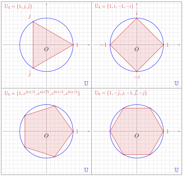 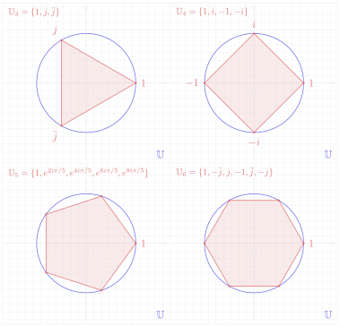
Vocabulaire clé 重点词汇
第八节核心术语
- racines \(n\)-ièmes de l'unité：\(n\) 次单位根
- polynôme：多项式
- polygone régulier inscrit：内接正多边形
- sommet：顶点
- cercle unité：单位圆
- exactement \(n\)：恰好 \(n\) 个
- par unicité de la forme exponentielle：由指数形式的唯一性
- on peut supposer que：可以假设
- correspondre à：对应